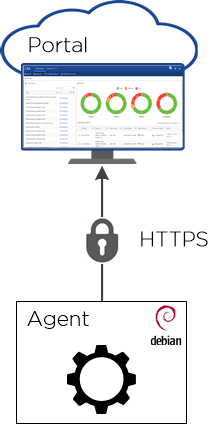

Security Edit on GitHub Request doc changes
Converged Systems Advisor collects configuration data about your FlexPod converged infrastructure to help you validate and monitor the system. You might want to understand how the data is collected, how it is transferred to NetApp, and how it is kept secure and private.
How the data is collected
The Converged Systems Advisor agent requires credentials to access the devices in your FlexPod converged infrastructure. Read-only credentials are required for Cisco UCS and Nexus switches, while admin credentials are required for ONTAP. The credentials are encrypted and stored locally on the agent—they are not sent to the cloud-based portal.
After you provide the credentials, the agent collects configuration data from the devices. Customer data that resides on the devices is never accessed or transferred. A representative sample of the configuration data that the agent collects includes the following:
-
Capacity
-
CPU and memory
-
Device connectivity
-
Device names and IDs
-
Device state
-
Firmware versions
-
IP addresses
-
iSCSI targets
-
Licenses
-
MAC addresses
-
Model numbers
-
Serial numbers
How the data is transferred
After the agent discovers configuration data from your FlexPod converged infrastructure, it sends the data to the Converged Systems Advisor portal using HTTPS. The communication is encrypted using NetApp’s TLS 1.2 certificate.

How the data is kept secure and private
The configuration data resides within the NetApp network and is managed by NetApp IT. The data is secured by a data access layer that requires positive identification of each user who requests access.
The user who deployed the agent can access the data from the Converged Systems Advisor portal by logging in with a NetApp Support Site account. This user has owner privileges to the converged infrastructure. The owner can share the converged infrastructure with other users by granting read-only, write, or owner privileges. Those users must also have a registered NetApp Support Site account to log in to the portal.